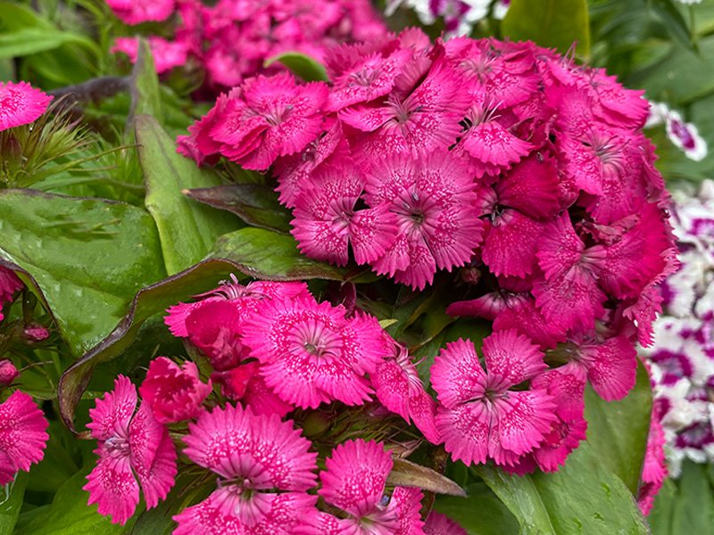
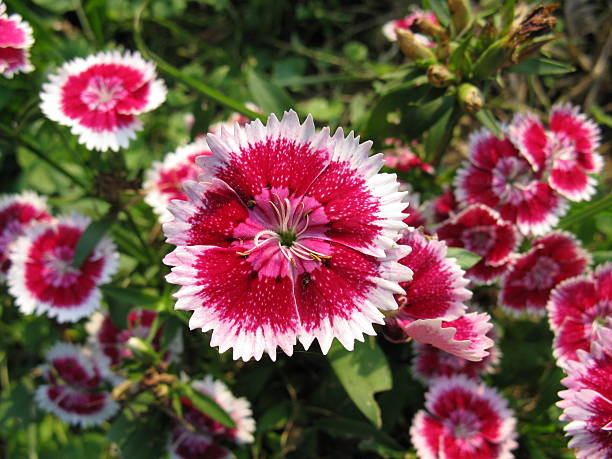
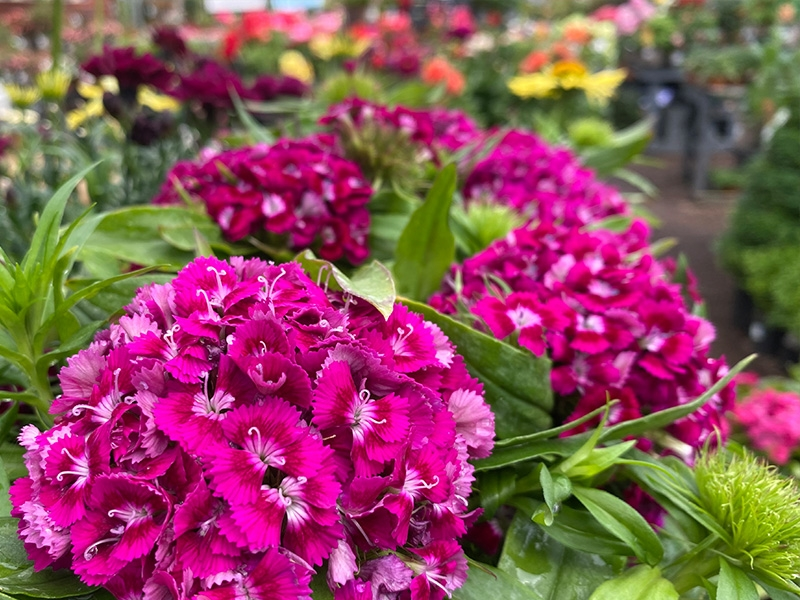
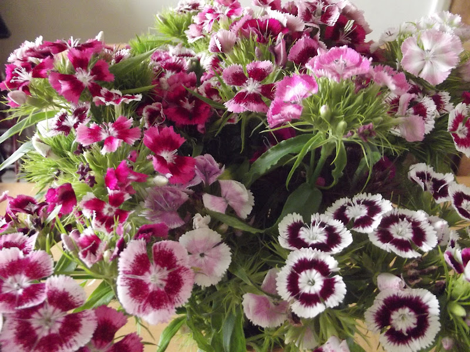

Meaning: Gallantry
Origin
The origin of this flower’s common name is uncertain; many have speculated that the bloom was named for various historical Williams —including William Shakespeare and William the Conqueror, among others—but no namesake has been confirmed. “Sweet William” was a common moniker for the gallant young men who featured in English folkloric stories and ballads.
Gallery



